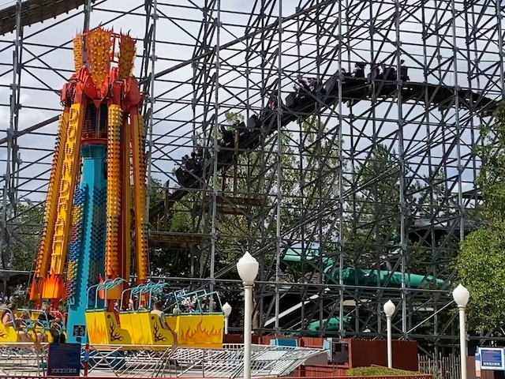
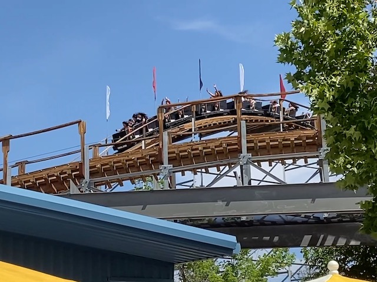
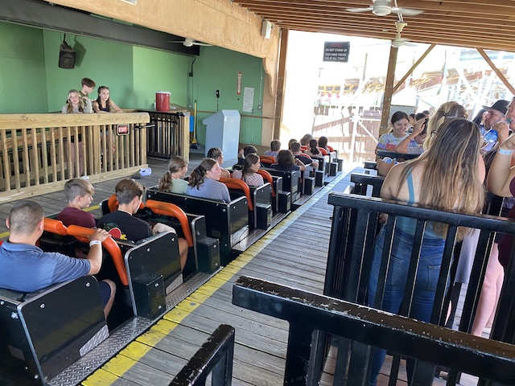

| |
New Mexico Rattler Review

We're here at Cliff's Amusement Park. Today we're going to review New Mexico Rattler, the park's wooden coaster and certainly the main reason that coaster enthusiasts care about this park at all (aside from credit whores who want a few other credits). So let's not waste any more time and hop aboard. Get in the trains, pull down the lap bars, buckle the seatbelts, and we're off!! We roll out of the station, around a turn, and climb up the lifthill. The ride isn't too tall. So this doesn't take long. And there's not much of a view. Just of some rides at Cliffs and a few shops nearby in Albuquerque (this is not a very exciting city). We then head down the curved first drop. It's not super big. But at the same time, it gives more speed than it appears. So we're going decently fast right now. Go through a quick little tunnel ("TAKE THE TUNNEL!!!") before popping out into a small little hill. There's a nice pop of airtime here that gets us out of our seats. Go through another slight curved hill. Still got a little speed going on. And there's a few decent laterals. Say hello to the rest of the ride as well as the park's Super Loop. We then head down a decent sized drop back to the ground, gaining more speed, and heading straight into ANOTHER TUNNEL!!! BAM!!! Pop out of that and into a curved hill. This gives us both some decent laterals as well as a nice pop of airtime. Hey. This ride may be small, but it's definately packing a punch! =) Go through another small hill, getting another tiny pop of airtime before we head through another sort of S Curve, before heading up another curved hill. There's a few laterals as we turn around the Elevated Chairswings (that is NOT big enough to be classified as a Starflyer). Things pick up again as we head down a sort of curved drop into ANOTHER TUNNEL!!!! Yeah. Nex Meico Rattler really likes its tunnels. And we're still turning inside, gaining more laterals. I'm really liking this ride. We pop out and head up another curved hill. We lose a bit of our speed, but things are still fun. We head down a very....not steep drop (think of it as straight track that gives you speed) before turning and heading up another small hill. We're starting to wind down. Aww. Bummer. Go around another curve. Keep on turning. Gaining more laterals. Hmm. Maybe I was wrong about it winding down. Get out of that upward helix. A few more turns. And.....nope. I was right. Brake run ahead. So yeah. New Mexico Rattler may not be the best ride ever by any means, but it's still a solid CCI Woodie and a PERFECT fit for a small park like Cliffs. It may be on the small side, but it still packs a nice little punch with some decent airtime as well as great laterals, good speed, good pacing, and just a ton of fun. Definately hit this ride up if you find yourself in Albuquerque!
7/10
Location: Cliff's Amusement Park
Opened: 2002
Built by: Custom Coasters
Last Ridden: June 9, 2022
New Mexico Rattler Photos






Home
|